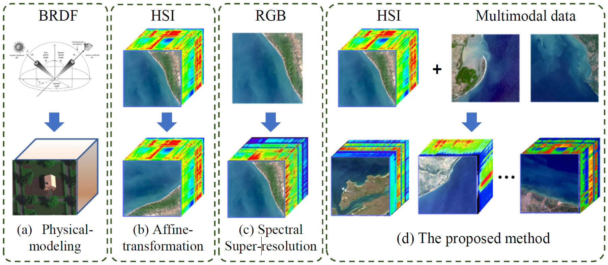
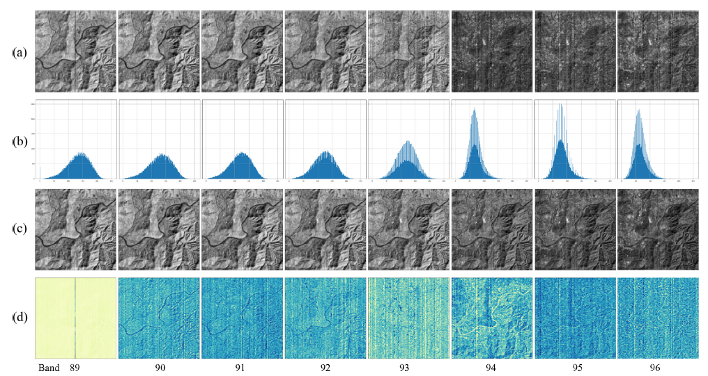
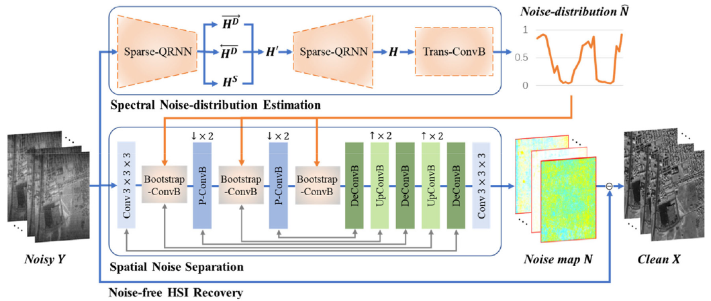
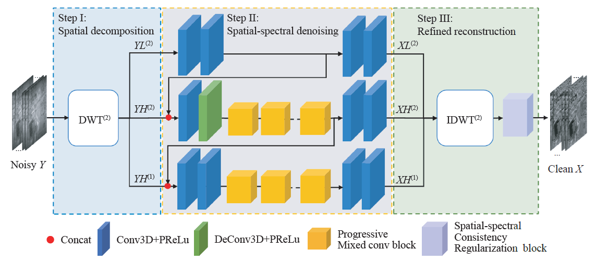
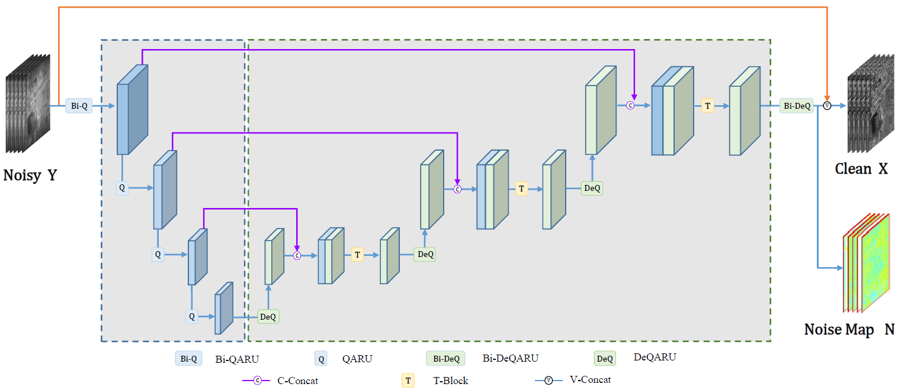
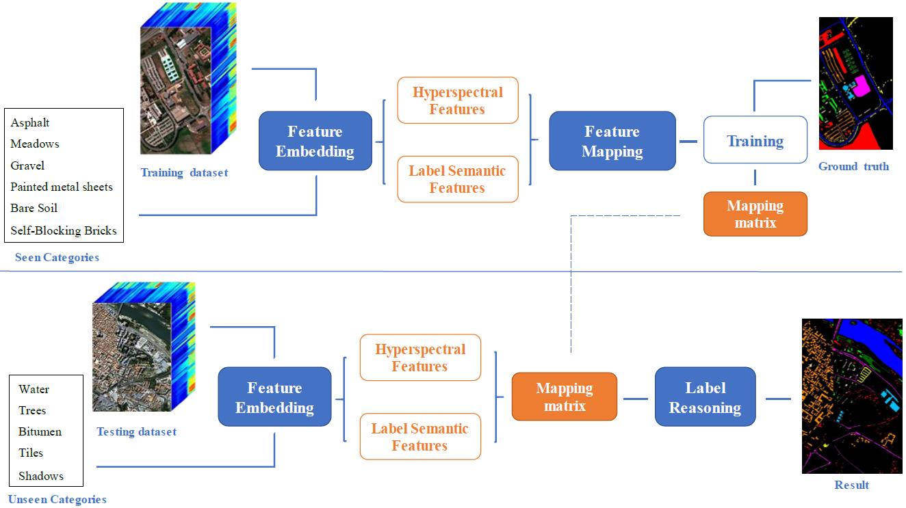
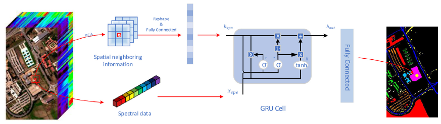
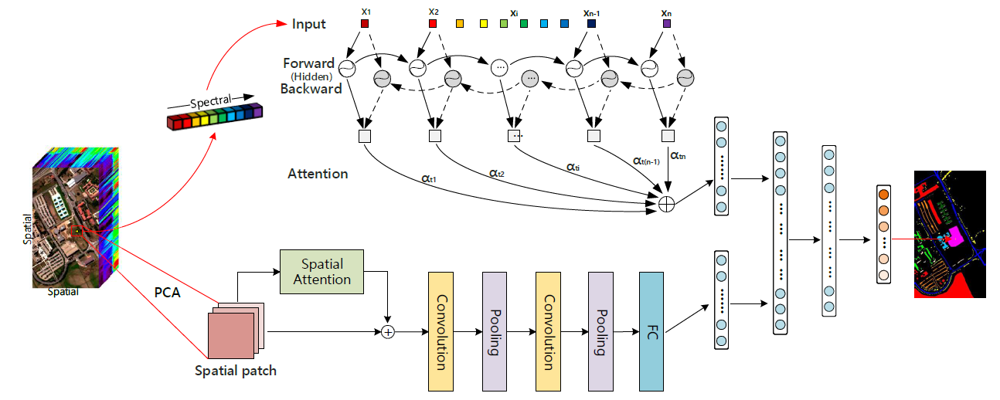
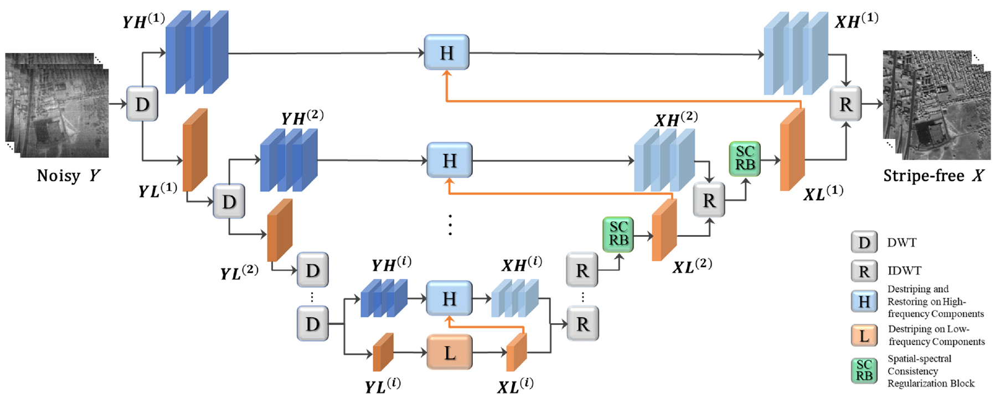
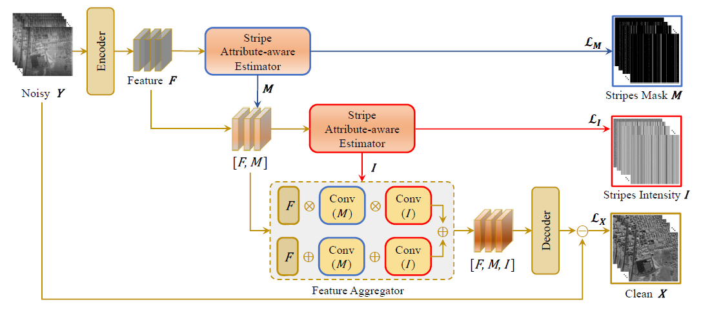

About me
Nice to meet you here!
I am currently a final-year Ph.D. candidate in the Electronic Information School, Wuhan University (WHU). I am fortunate to be advised by Prof. Jiayi Ma, and Prof. Yong Ma in the lab of Multi-spectral Vision Processing (MVP). I am currently in the job market and looking for a Postdoc position.
My research pursues to model multi-modal and multi-dimensional data to empower next-generation intelligent perception. It primarily unfolds on two complementary levels: (a) computational imaging fundamentals; (b) application-oriented projects. I am actively exploring and implementing solutions to real world problems, in order to make our lives better.
Previously, I got my B.Eng. degree from Northeast Normal University (NENU) in 2018, and recommended as an exam-free student to WHU, and then got my M.Eng. degree there in 2020. These journey are very helpful and interesting, and I always appreciate what I have learned and experienced.
You can find my full CV here.
If you are interested in my research or would like to have a casual chat, please do not hesitate to contact me.
By the way, I am delighted to assist undergraduate students in their academic and personal growth. Whether you need guidance on course selection, advice on research, or support navigating the challenges of university life, I am available to help. Please feel free to ask any questions you may have, and I will offer my support to the best of my ability.
Education
Wuhan University, MVPLab
Wuhan, China
2018 - present
Northeast Normal University
Changchun, China
2014 - 2018
Research Experience
|
Multi-modal Fusion-based Hyperspectral Image Generation
Ongoing
Acquiring and processing hyperspectral data can be time-consuming and expensive, which causes a series of issues involving data scarcity, class skew, and target background restriction. It hinders the progress of large-scale AI-based studies and a range of applications. To this end, we tend to raise a new paradigm of HSI generation, generating a vast amount of HSI with a rich diversity in various categories and scenes, closely resembling realistic data. See the project page here. |
 |
|
Robust Hyperspectral Image Restoration for Complex Degradation
Ongoing
Hyperspectral images are often affected by noise due to unstable factors in the complex imaging chain. This noise can significantly degrade the content and visual quality of the images, hindering their analysis and interpretation. To alleviate these issues, we take advantage of the inherent characteristics of hyperspectral images and unique properties of hyperspectral degradation and incorporate both data-driven and model-driven strategies to propose a series of denoising and destriping methods. |
 |
|
Model-based Deep Learning Hyperspectral Image Classification
Prospective
A hyperspectral image is a three-dimensional data cube with high dimensionality, a strong correlation between adjacent bands, a highly nonlinear data structure, and few training samples. These characteristics make the hyperspectral image classification task challenging. To tackle these challenges, we have endeavored to develop methods that improve classification accuracy, efficiency, and generalization ability. |

|
Publications
The full publication list can be seen in Google Scholar.
Click here and jump to: Journal papers, Preprints, Conference papers.
Journal papers
Erting Pan, Ma Yong, Xiaoguang Mei, Fan Fan, and Jiayi Ma
Pattern Recognition(PR). In Press.
[URL] [Paper] [Code]

Erting Pan, Ma Yong, Xiaoguang Mei, Jun Huang, Fan Fan, and Jiayi Ma
IEEE/CAA Journal of Automatica Sinica, 2023.
[URL] [Paper] [Code]

Erting Pan, Ma Yong, Xiaoguang Mei, Fan Fan, Jun Huang, and Jiayi Ma
IEEE Transactions on Geoscience and Remote Sensing, 2022.
[URL] [Paper] [Code]

Erting Pan, Ma Yong, Fan Fan, Xiaoguang Mei, and Jun Huang
Remote Sensing, 2021.
[URL] [Paper]

Erting Pan, Xiaoguang Mei, Ma Yong, Quande Wang, and Jiayi Ma
Neurocomputing, 2020.
[URL] [Paper]

Xiaoguang Mei, Erting Pan, Ma Yong, Xiaobing Dai, Jun Huang, Fan Fan, Qinglei Du, Hong Zheng, and Jiayi Ma
Neurocomputing, 2020.
[URL] [Paper] [Code]

Preprints
Erting Pan, Ma Yong, Xiaoguang Mei, Fan Fan, and Jiayi Ma
Under Review.
[Paper] [Code]

Erting Pan, Ma Yong, Xiaoguang Mei, Fan Fan, and Jiayi Ma
Under Review.
[Paper]

Conference papers
Erting Pan, Ma Yong, Xiaoguang Mei, Fan Fan, and Jiayi Ma
IEEE International Conference on Acoustics, Speech and Signal Processing (ICASSP), Toronto, Canada, Jun.2021.
[URL] [Paper] [Slide]
Erting Pan, Ma Yong, Xiaoguang Mei, Fan Fan, and Jiayi Ma
The 5th Symposium on Hyperspectral Imaging Technology and Applications, Shanghai, China, Oct.2020.
[URL] [Paper] [Slide]
Erting Pan, Ma Yong, Xiaoguang Mei, Fan Fan, and Jiayi Ma
IEEE International Geoscience and Remote Sensing Symposium (IGARSS), Yokohama, Japan, Jul.2019.
[URL] [Paper] [Slide]
Erting Pan, Ma Yong, Xiaoguang Mei, Fan Fan, and Jiayi Ma
IEEE International Geoscience and Remote Sensing Symposium (IGARSS), Yokohama, Japan, Jul.2019.
[URL] [Paper] [Slide]
Professional Service
Reviewer
IEEE Transactions on Image Processing (TIP)
IEEE/CAA Journal of Automatica Sinica (JAS)
IEEE Transactions on Geoscience and Remote Sensing (TGRS)
Neural Networks
Neurocomputing
Student Editor
Teaching Assistant
Honor & Awards
Contest Rewards
Runner-up in the 17th China Post-Graduate Mathematical Contest in Modeling, Dec. 2020
Bronze Medalist in Tianchi Global Data Intelligence Competition, Sep. 2019
Honors
Merit Undergraduate (Top3) in NENU, Otc. 2016
Scholarships
Huawei Post-Graduate Scholarship in WHU, Dec. 2021
Outstanding Academic Scholarship (Grade 1, 3 times) in WHU, Dec.2019, Dec. 2021, and Dec. 2022
The First-Class Scholarship in NENU, Oct. 2016
Outstanding Student Cadres Scholarship in NENU, Oct. 2016
Academic Specialty Scholarship in NENU, Oct. 2016
Miscellaneous
I am a longtermist. Outside my research, I enjoy outdoor excercise such as jogging, riding, and hiking.